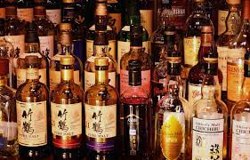

Traditonal Alcoholic Drinks
Spirit. Awamori. Okinawa Prefecture. Japan. ...
Spirit. Arak. Lebanon. Asia. ...
Cocktail. Highball (Japan) Japan. Asia. ...
Cocktail. Gin and Tonic. India. Asia. ...
Spirit. Soju. South Korea. Asia. ...
Fruit Liqueur. Umeshu. Japan. Asia. ...
Alcoholic Beverage. Rice Wine. China. ...
Spirit. Shōchū Japan.
Soft drinks
Dairy Beverage. Ayran. Iran. Asia. ...
Tea. White Tea. Fujian. China. ...
Dairy Beverage. Lassi. Punjab. ...
Coffee (Beverage) Turkish Coffee. Turkey. ...
Tea. Oolong. Wuyishan. ...
Tea / Infusion. Bubble Tea. Taiwan. ...
Non-alcoholic Beverage. Kombucha. Northeast China. ...
Tea. Green Tea. China.